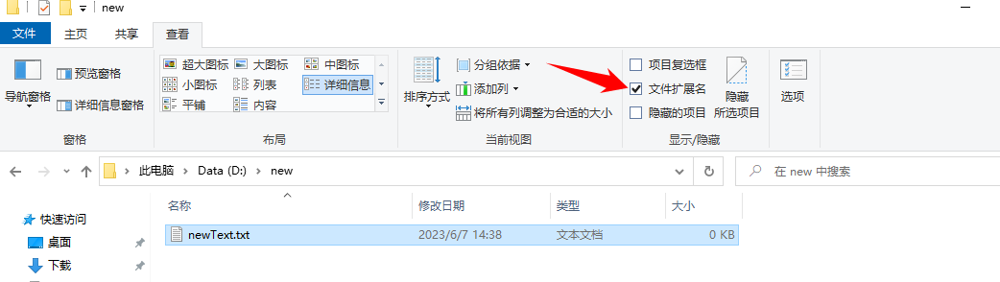

文件的组成¶
以C:\Windows\notepad.exe 为例 文件应具有自己的属性，常见属性可以包括：
| 文件名 : notepad | 文件名 (File Name): notepad |
| 文件类型 : exe | 文件类型 (File Type): 主要由扩展名表示，如 exe |
| 文件大小 : 196 KB | 文件大小 (File Size): 196 KB |
| 文件的路径 : C:\Windows\notepad.exe | 文件的路径 (File Path): C:\Windows\notepad.exe (Windows 路径分隔符为 \，Linux/macOS 通常为 /) |
| 建立时间 : 2020 年 1 月 1 日 10:00:00 | 创建时间 (Creation Time): 2020年1月1日 10:00:00 (文件最初创建的时间) |
| 修改日期 : 最近一次修改文件的日期 | 修改时间 (Modification Time): 最近一次修改文件内容的日期 |
其他的有关文件附带的部分标签
- 访问时间 (Access Time): 最近一次读取或打开文件的日期 (操作系统出于性能考虑更新可能不精确)
- 只读属性 (Read-only): 标记文件是否只能读取，不能修改或删除（需要权限）
- 隐藏属性 (Hidden): 标记文件是否在默认的文件管理器视图中隐藏
- 系统属性 (System): 标记文件是否为操作系统关键文件（通常不建议用户修改）
- 归档属性 (Archive): 主要用于备份软件，标记文件自上次备份后是否被修改过
- 所有者/权限 (Owner/Permissions): (在支持多用户的系统如 Windows NTFS, Linux/Unix 中) 指定哪些用户或用户组可以读取、写入或执行该文件，对安全至关重要
- 数字签名 (Digital Signature): (常见于可执行文件
.exe,.dll或包含宏的文档) 用于验证文件来源的真实性和完整性，防止篡改，是重要的安全属性
文件类型¶
一个文件是什么类型的文件主要可以通过文件的扩展名来表示 (但这并非绝对可靠)。
扩展名¶
以 win10 为例我们可以勾选查看 > 文件扩展名来显示文件的扩展名

值得注意是的扩展名的大小写并不影响文件的类型，所以.TXT 和 .txt 是等价的。
常见的扩展名有：
| 扩展名 | 说明 | 主要识别依据/备注 | 典型打开方式 |
|---|---|---|---|
.txt |
无格式的文本文件 | 纯文本内容 | 记事本、VS Code、Sublime Text 等 |
.html; .htm; .shtml; .xhtml |
超文本标记语言文件 (网页) | <!DOCTYPE html> 等标签 |
浏览器 (显示)、文本编辑器 (编辑) |
.doc; .docx |
Word 文档 | .doc (二进制格式), .docx (基于 ZIP + XML, 文件头 PK) |
Microsoft Word, WPS Office |
.ppt; .pptx |
PowerPoint 演示文稿 | .ppt (二进制格式), .pptx (基于 ZIP + XML, 文件头 PK) |
Microsoft PowerPoint, WPS Office |
.xls; .xlsx |
Excel 工作簿 | .xls (二进制格式), .xlsx (基于 ZIP + XML, 文件头 PK) |
Microsoft Excel, WPS Office |
.pdf |
便携式文档格式 (电子书) | 文件头 %PDF- |
Adobe Acrobat Reader, Microsoft Edge, Foxit |
.bmp |
Windows 位图文件 | 文件头 BM |
画图、几乎所有图片查看器 |
.jpg; .jpeg |
JPEG 有损图像格式 | 文件头 FF D8 FF |
几乎所有图片查看器 |
.png |
PNG 无损图像格式 | 文件头 ‰PNG (89 50 4E 47 0D 0A 1A 0A in hex) |
几乎所有图片查看器 |
.gif |
图形交换格式 (支持动画) | 文件头 GIF87a 或 GIF89a |
几乎所有图片查看器 |
.ico |
Windows 图标文件 | 图片查看器、资源管理器 | |
.psd |
Adobe Photoshop 源文件 | 文件头 8BPS |
Adobe Photoshop, ACDSee, XnView |
.exe |
Windows 可执行文件 | 文件头 MZ (4D 5A in hex) |
双击运行 (警惕伪装!) |
.dll |
Windows 动态链接库 | 文件头 MZ (4D 5A in hex) |
由程序调用 |
.rar |
RAR 压缩文档 | 文件头 52 61 72 21 (Rar!) |
WinRAR, 7-Zip, Bandizip 等 |
.zip |
ZIP 压缩文档 | 文件头 PK (50 4B 03 04 in hex) |
几乎所有解压缩软件 |
.7z |
7-Zip 压缩文档 | 文件头 37 7A BC AF 27 1C (7z¼¯') |
7-Zip, Bandizip, PeaZip 等 |
.mp3 |
MPEG 音频层 III 文件 | 文件头 ID3 标签 或 FF FB/FF F3 (帧同步) |
几乎所有音频播放器 |
.mp4 |
MPEG-4 视频文件 | 文件头 ....ftyp (包含 mp42, isom 等) |
几乎所有视频播放器 |
.py |
Python 脚本/源代码 | 内容为 Python 代码，首行常为 #!/usr/bin/env python3 |
Python 解释器，VS Code, PyCharm 等 |
.bat, .cmd |
Windows 批处理脚本 | 内容为批处理命令 | Windows 命令处理器 (cmd.exe) |
.sh |
Unix/Linux Shell 脚本 | 内容为 Shell 命令，首行常为 #!/bin/bash，需要可执行权限 |
Bash, Zsh 等 Shell (在终端执行) |
.log |
日志文件 | 通常为文本，包含时间戳和事件记录 | 文本编辑器 |
| (无扩展名) | 多种可能 (可执行脚本、文本、数据) | 依赖文件内容 (文件头) 或上下文 | 系统提示选择程序 |
扩展名与文件类型并不是 100% 对应的¶
- 文件头/魔数 (Magic Number) 是关键： 文件开头的几个特定字节（称为“文件头”或“魔数”）是操作系统和应用程序识别文件真实类型的最主要依据。例如：
.exe和.dll~~文件通常以字节4D 5A(对应字符MZ) 开头。~~.pdf~~文件通常以%PDF-开头。~~.zip,.docx,.xlsx,.pptx文件本质是 ZIP 压缩包，~~以50 4B 03 04(PK) 开头。~~.png~~文件以89 50 4E 47 0D 0A 1A 0A开头 (对应字符.PNG....)。~~.jpg~~文件通常以FF D8 FF开头。~~- 扩展名可以被随意修改： 你可以把一个
.txt文件重命名为.exe或.jpg。这不会改变文件的实际内容。 - 后果： 双击修改后的
.exe文件（本质仍是文本）会导致错误（因为它不是有效的可执行程序）。用图片查看器打开修改后的.jpg文件（本质是文本）会显示乱码或错误。 - 安全风险： 这是恶意软件常用的伪装手段！例如，一个病毒程序（真实是
.exe）可能被伪装成document.pdf.exe（并隐藏已知扩展名，显示为document.pdf）或直接重命名为image.jpg诱骗用户点击。 - 如何查看真实文件类型？
- 使用十六进制编辑器查看文件头。
- 在 Linux/macOS 终端或 Windows 的 Git Bash/WSL 中使用
file命令（如file example.txt）。 - 使用专业的文件分析工具（如 TrID, FileAlyzer, DROID 等）。
- 无扩展名文件： 文件可以没有扩展名。操作系统和应用程序主要依赖文件头（魔数）或文件权限来判断其类型和用途（例如，Linux 下没有扩展名但有可执行权限和正确文件头的脚本仍然可以执行）。在 Windows 上双击无扩展名文件，系统会提示用户选择打开程序。
文件类型识别的意义¶
正确识别文件类型对于以下方面至关重要：
- 安全性： 避免打开恶意伪装的程序或文档。
- 功能正确性： 确保使用正确的应用程序打开文件，获得预期功能（如编辑、播放、运行）。
- 数据兼容性： 确保应用程序能正确解析文件内容，避免乱码或错误。
- 数据恢复： 在恢复损坏或删除的文件时，文件头签名是识别和重组数据的关键线索。
不同操作系统的差异¶
- Windows: 高度依赖文件扩展名来确定文件类型和关联程序（双击行为）。文件权限（NTFS）也起重要作用。
- Linux/macOS (Unix-like): 扩展名更多是约定俗成。系统判断文件类型主要依赖：
- 文件头 (Magic Number)： 使用
file命令的核心依据。 - 文件权限：
ls -l查看，x(可执行) 位决定文件是否能作为程序运行。一个没有.sh扩展名但拥有可执行权限且以#!/bin/bash开头的文件，仍然是可执行的 Shell 脚本。 - MIME 类型数据库： 图形界面文件管理器也会利用扩展名和文件头信息查询 MIME 类型数据库来确定文件类型和关联程序。
参考¶
电脑文件 : https://baike.baidu.com/item/%E7%94%B5%E8%84%91%E6%96%87%E4%BB%B6/21421152
文件格式列表 : https://zh.wikipedia.org/wiki/%E6%96%87%E4%BB%B6%E6%A0%BC%E5%BC%8F%E5%88%97%E8%A1%A8